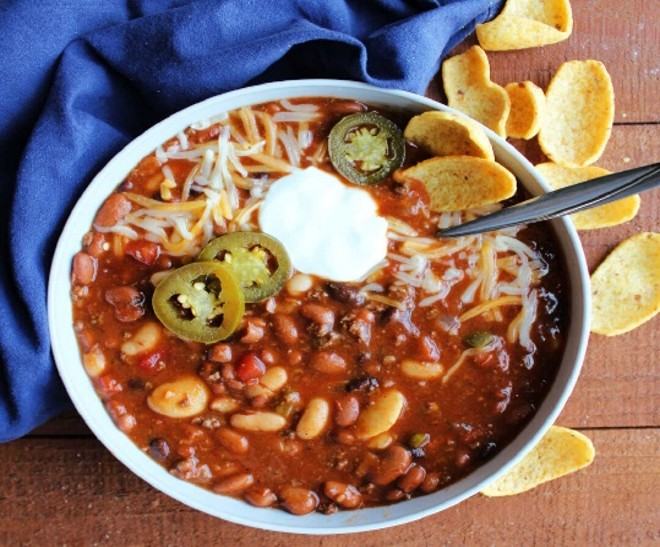

Venison chili, often called "deer chili," is a hearty, flavorful twist on classic homemade chili. Lean deer meat, beans, tomatoes, and savory spices come together for a rich, satisfying meal that's perfect for cool evenings after a day in the woods.
Ingredients
- 1 lb ground venison (or cubed venison for chunkier texture)
- 2 tbsp olive oil
- 1 large onion, diced
- 1 bell pepper, diced
- 2 cloves garlic, minced
- 1 can (14.5 oz) diced tomatoes
- 1 can (6 oz) tomato paste
- 1 can (14 oz) kidney beans, drained and rinsed
- 1 can (14 oz) black beans, drained and rinsed
- 1 cup beef or venison stock
- 2 tbsp chili powder
- 1 tbsp cumin
- 1 tbsp smoked paprika
- 1 tsp oregano
- 1 tsp cayenne pepper (optional)
- 1/2 tsp cinnamon (optional)
- Salt and pepper to taste
- 1–2 tbsp brown sugar (optional)
Optional Toppings
- Sour cream
- Shredded cheese
- Chopped cilantro
- Green onions
- Jalapeños
Instructions
- Heat olive oil in a large pot over medium-high heat. Add venison and cook until browned, breaking it up as it cooks.
- Add onion and bell pepper, cooking for about 5 minutes until softened. Stir in garlic and cook for 1 minute.
- Stir in diced tomatoes, tomato paste, beans, and stock. Mix well.
- Add chili powder, cumin, paprika, oregano, cayenne, and cinnamon (if using). Stir to combine.
- Bring to a simmer, then reduce heat to low and cook uncovered for 45–60 minutes, stirring occasionally.
- Taste and adjust seasoning with salt, pepper, or brown sugar if needed.
- If chili is too thick, add more stock or water to reach the desired consistency.
Serve
Serve hot with your favorite toppings, including sour cream, shredded cheese, cilantro, or sliced jalapeños. Cornbread or crackers make a great side.
Jason's Outdoor Tips
- Ground venison cooks faster; cubed venison benefits from longer simmering.
- Adjust the cayenne and jalapeños to control the heat.
- Chili tastes even better the next day after the flavors develop.
- Add extra stock if you prefer a thinner chili.